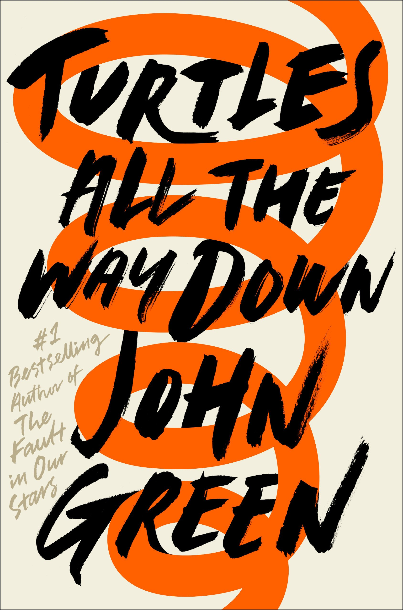

A Little Bit About Me and (CS and Math).
I LOVE BOOKS!!!
This is the thing that I really love to do. To me, books are an escape out of my life and into the lives of others. It makes me feel less alone in the world I live in. It's also a good way to grow your vocabulary and great form of entertainment.

Some of my favorite books in the fiction genre include Turtles All the Way Down by John Green, The Outsiders by SE Hinton, and It by Stephen King.



Other books that I love in the non-fiction genre include Hilbilly Elegy by JD Vance, Rocket Boys (AKA October Sky) by Homer Hickam, and I Never Had It Made by Jackie Robinson.


My favorite subjects include English, History, and Psychology.
Now that you know stuff about me, let's talk a little bit about CS and Math.
There are three projects that I are my favorites this year. Here are the links to them.
Vectors
I chose this one because of the effects and the changes that are made. And in general it's just awesome, too.
Bouncy Balls
This one is awesome because there's a lot of bouncy balls bouncing around! It's also kinda hard to keep up with, but that's what makes it awesome!
My Emoji
I chose this one because it's a lot of fun to look at. It's also cool when it refreshes and pops up in different spots and changes color. Also the eyeroll emoji 🙄; who doesn't use that at all?